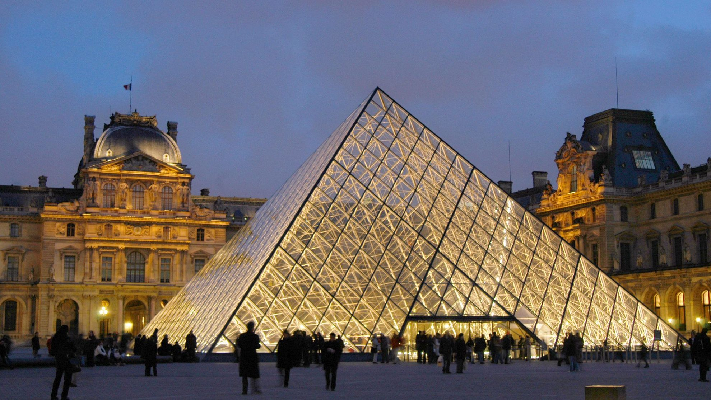
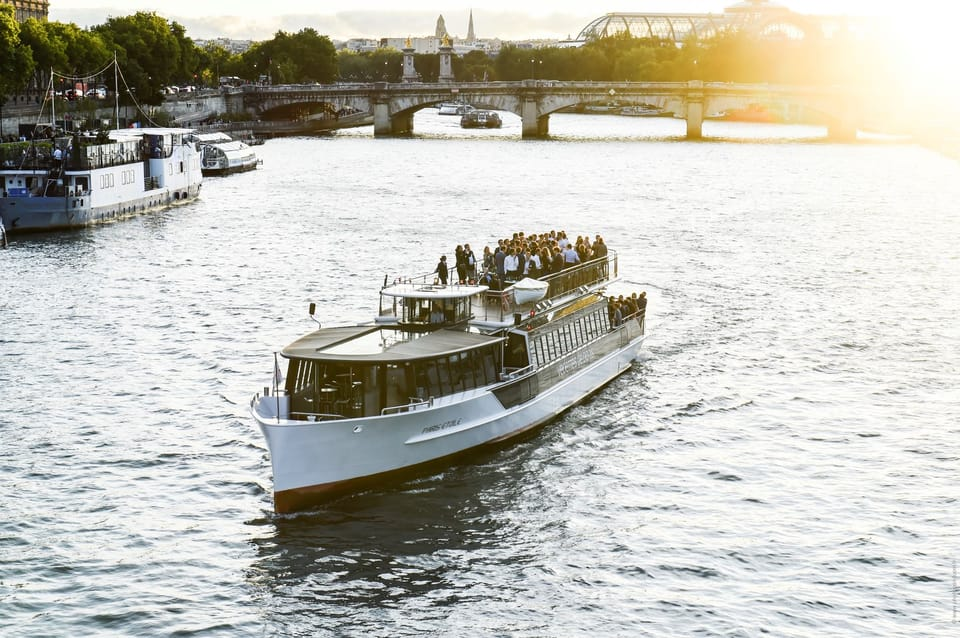

Paris
Paris, a capital da França, é um destino deslumbrante para os amantes da arte, da cultura e do romance. Seja para admirar as obras-primas do Louvre, se maravilhar com o esplendor gótico de Notre-Dame ou passear às margens do Sena, Paris tem algo para todos. Você também pode explorar os diversos bairros de Paris, desde o boêmio Montmartre até o descolado Belleville, e descobrir os sabores locais e as joias escondidas. Não se esqueça de apreciar os monumentos icônicos de Paris, como a Torre Eiffel, o Arco do Triunfo e a Champs-Élysées, e vivenciar a animada vida noturna e a gastronomia da Cidade Luz. Paris é um sonho realizado para qualquer viajante.
Aqui estão alguns pontos turísticos de Paris que valem a pena serem visitados:
Arco do Triunfo
O Arco do Triunfo é uma versão neoclássica do estilo do antigo arco triunfal romano. Com 50 metros de altura, a vista da plataforma no topo do arco vale bem a pena a caminhada. Vê a dúzia de avenidas parisienses que irradiam do arco para a Cidade da Luz. Paris é um dos lugares mais fascinantes do mundo e tu vais encontrar-te mesmo no seu centro.
Inspirado pelos grandes arcos da Roma antiga, Napoleão encomendou o Arco do Triunfo pouco depois da sua vitória em Austerlitz. Infelizmente, nunca viveu para ver a sua conclusão.
Na base do arco, o Túmulo do Soldado Desconhecido presta homenagem aos 1,3 milhões de soldados franceses que morreram na Primeira Guerra Mundial. Contempla a chama eterna que é reacendida às 18h30 todas as noites. Além disso, há uma exposição imperdível que explica a importância simbólica deste monumento.
A vista do topo do arco vale a pena subir os 284 degraus. A partir da tua posição privilegiada, observa toda a cidade de Paris.
Museu do Louvre (necessita ingresso)

Icónico Museu do Louvre com um ingresso de acesso reservado. Maravilha-te com obras de arte, do Antigo Egito ao Renascimento, caminhando ao teu próprio ritmo.
O Museu do Louvre de Paris possui uma história rica e fascinante que abriga mais de oito séculos. Originalmente construído como uma fortaleza no final do século XII pelo rei Filipe II, o então Castelo do Louvre evoluiu ao longo do tempo, passando de palácio real a museu público após a Revolução Francesa. O Louvre abriu oficialmente suas portas ao público em 1793, um ano depois do desaparecimento da monarquia, exibindo originalmente uma pequena coleção.
Sob a liderança de Napoleão Bonaparte, a coleção do museu se expandiu significativamente através aquisições e até de despojos das suas conquistas. Ao longo dos séculos XIX e XX, o Louvre continuou a crescer, adquirindo obras-primas como a Mona Lisa. Hoje em dia, o Louvre é o maior museu de arte do mundo e um símbolo do patrimônio cultural da França. Ele abriga uma extensa e diversificada coleção que abrange desde civilizações antigas até a era moderna. A icônica entrada com a pirâmide de vidro, projetada pelo arquiteto I. M. Pei, foi inaugurada em 1989, adicionando um toque contemporâneo a essa instituição histórica.
As coleções do Louvre são administradas por oito departamentos de conservação, o Departamento de História do Louvre, o Musée National Eugène-Delacroix e o Departamento de Arquitetura, Manutenção e Jardins. A atividade científica do museu está estruturada em torno de três grandes áreas de investigação: estudos museológicos, estudos de coleções e estudos de materiais e técnicas.
Disneyland Paris (necessita ingresso)
Descobre um lugar único e vive aventuras emocionantes, maravilhas de cortar a respiração e um mundo de fantasia que te fará sonhar sem limites, tudo isto em dois incríveis Parques Disney, sete Hotéis Disney temáticos e mais de 50 restaurantes Disneyliciosos.
Rio Sena (necessita ingresso)

O rio Sena é um rio do norte de França que banha a capital Paris e que deságua no Oceano Atlântico. Tem uma extensão de 776 km.
Nasce a 470 metros de altitude, na Meseta de Langres, em Côte-d'Or. O seu curso tem uma orientação geral de sudeste a noroeste. Deságua no canal da Mancha, perto de Le Havre. A área da sua bacia hidrográfica é aproximadamente de 75 000 km².
O transporte turístico de passageiros pelo Sena é uma atividade tradicional em Paris, com seus bateaux mouches, barcos moscas. O número de turistas na França supera os 80 milhões, e a grande maioria visita Paris. Como as principais atrações turísticas de Paris estão localizadas junto as margens do Rio Sena ou nas suas proximidades, de 200 a 500 metros, a Prefeitura de Paris está elaborando um projeto de interligação dos diversos trechos das margens do rio.
Palácio de Versalhes
Palácio de Versalhes é um castelo real localizado na cidade de Versalhes, uma aldeia rural à época de sua construção, mas atualmente um subúrbio de Paris. Desde 1682, quando Luís XIV se mudou de Paris, até a família real ser forçada a voltar à capital em 1789, a Corte de Versalhes foi o centro do poder do Antigo Regime na França.
O monarca queria um local onde pudesse organizar e controlar completamente um Governo da França por um governante absoluto. Resolveu assentar no pavilhão de caça de Versalhes, e ao longo das décadas seguintes expandiu-o até torná-lo no maior palácio do mundo. Versalhes é famoso não só pelo edifício, mas como símbolo da Monarquia absoluta, a qual Luís XIV sustentou.
Considerado um dos maiores do mundo, o Palácio de Versalhes possui 153 janelas, 67 escadas, 352 chaminés, 700 quartos, 250 lareiras e 700 hectares de parque. É um dos pontos turísticos mais visitados da França, recebe em média oito milhões de turistas por ano. Construído pelo rei Luís XIV, o "Rei Sol", a partir de 1664, foi por mais de um século modelo de residência real na Europa, e por muitas vezes foi copiado.
Em 1837 o castelo foi transformado em museu de história. O palácio está cercado por uma grande área de jardins, uma série de plataformas simétricas com canteiros, estátuas, vasos e fontes trabalhados, projetados por André Le Nôtre. Como o parque é grande, um trem envidraçado faz um passeio entre os monumentos.
Torre Eiffel (necessita ingresso)
A Torre Eiffel, símbolo de Paris e da França, é o monumento imperdível a visitar quando se está na Cidade da Luz. Com uma altura de 330 metros, a Torre Eiffel tem uma história fascinante que remonta ao final do século XIX.
Seu arquiteto, o engenheiro Gustave Eiffel, já era renomado por suas realizações em pontes, viadutos e estruturas metálicas antes de construir esta emblemática estrutura de ferro. A Torre foi originalmente concebida como uma instalação temporária para a Exposição Universal de Paris em 1889, para celebrar o centenário da Revolução Francesa.
A Torre Eiffel recebe o público todos os dias, das 9h30 às 23h45 (das 9h às 0h45 em julho e agosto). Para visitar os pisos da Torre Eiffel - há 3 níveis: 1.º piso, 2.º piso e cimo - os visitantes podem comprar bilhetes antecipadamente na bilheteria online oficial, ou comprar bilhetes no local no dia da visita, nas bilheteiras localizadas no pátio sob a Torre Eiffel. Para aqueles que desejam apenas passear sob a Torre, no pátio e nos jardins, o acesso é gratuito e livre. Basta usar uma das duas entradas principais (controle de segurança) do monumento. A Torre Eiffel oferece bilhetes de visita, que vão até o cimo, ou até o 2.º piso. A visita sempre inclui os níveis inferiores.
br>
Catedral de Notre Dame
A Catedral de Notre-Dame de Paris é uma das mais antigas catedrais francesas em estilo gótico. Iniciada sua construção no ano de 1163, é dedicada à Virgem Maria e situa-se na Île de la Cité em Paris, rodeada pelas águas do rio Sena.
A catedral surge intimamente ligada à ideia de gótico no seu esplendor, ao efeito claro das necessidades e aspirações da alta sociedade, a uma nova abordagem da catedral como edifício de contacto e ascensão espiritual.
A arquitetura gótica substituiu as paredes grossas das igrejas românicas por colunas altas e arcos capazes de sustentar o peso dos telhados. Como consequência, os edifícios góticos ganharam um aspecto mais leve, e as janelas, mais amplas e altas, foram decoradas com belos vitrais coloridos que filtravam a luz natural, e com isso, criavam um clima de misticismo em seu interior.
Em 15 de abril de 2019 a catedral foi atingida por um violento incêndio causando danos ao teto, pináculo e rosáceas. No dia do acidente, as causas do fogo ainda eram desconhecidas, embora se suspeitasse que tivessem a ver com as obras que estavam em curso.
br>